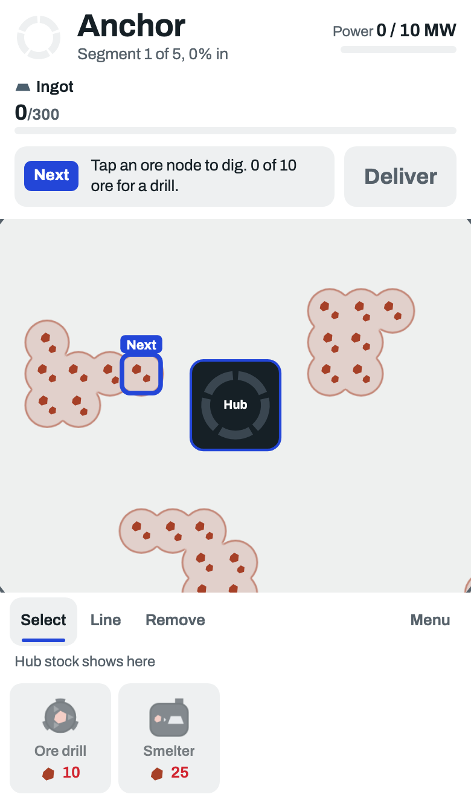
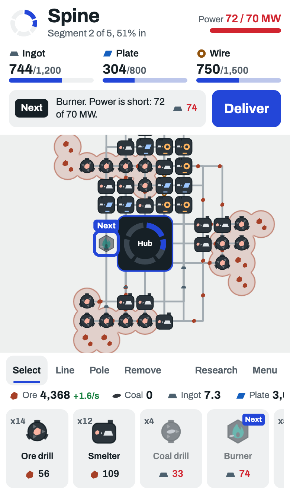
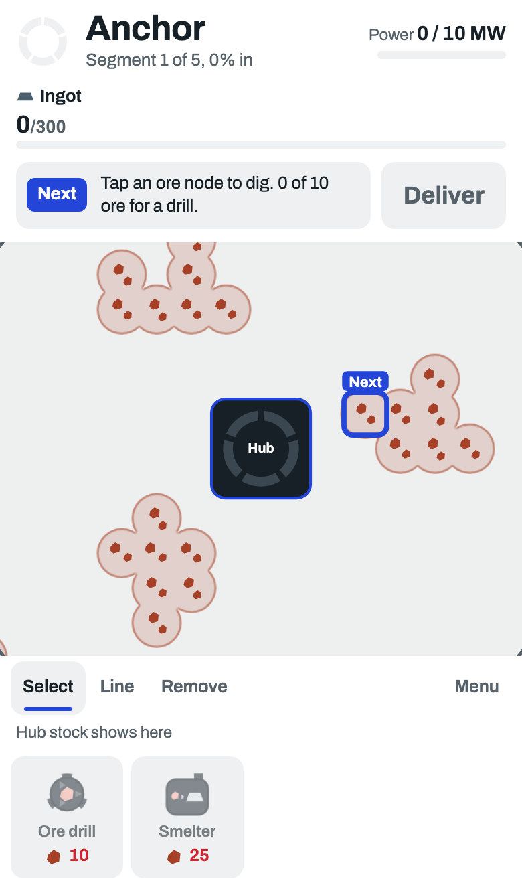
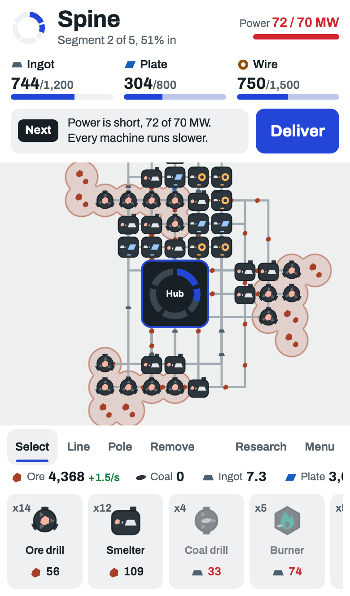
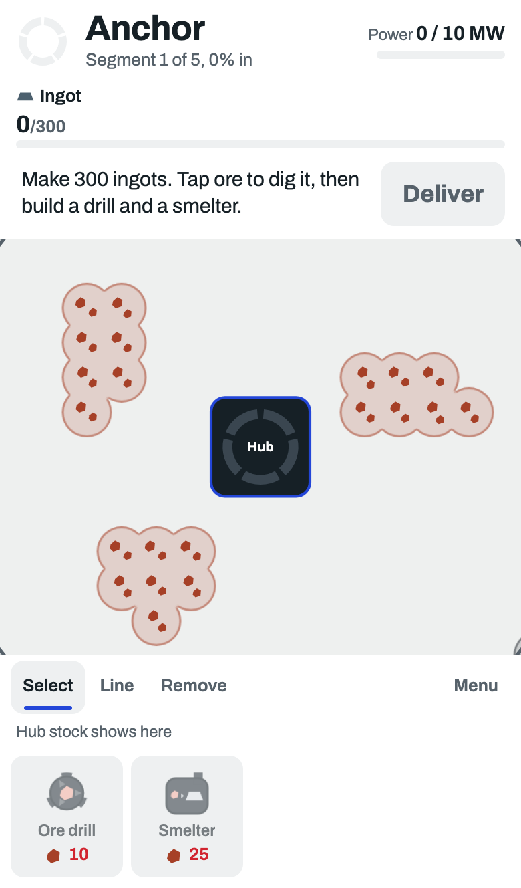
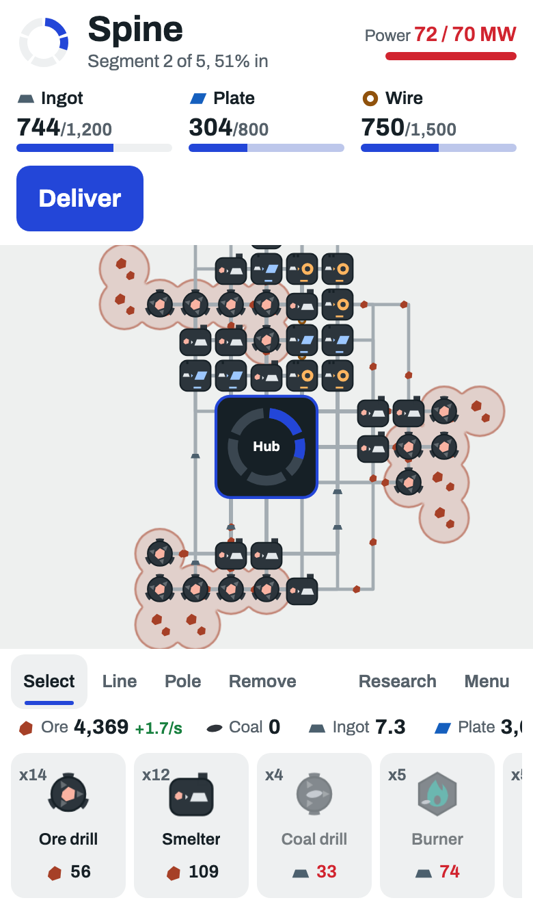

2. First minutes: how a new player learns
Real game on a phone. Left: a new game. Right: Spine, about 25 minutes in.
New game25 minutes in
A: as nowNext always says the one best move: dig here, build a burner, link this. Tap it and it does half the work. A player can follow it the whole game.


B: teaches, then steps backpickSame as now for the first segment (about 4 minutes). From Spine on it only names a problem (power short, a line backed up, a machine idle) and never says what to build. The fix is the player's.


C: one line, then nothingA new game opens with one sentence on what to make and how. No Next after that; the needs at the top and the machine cards are the guide.

